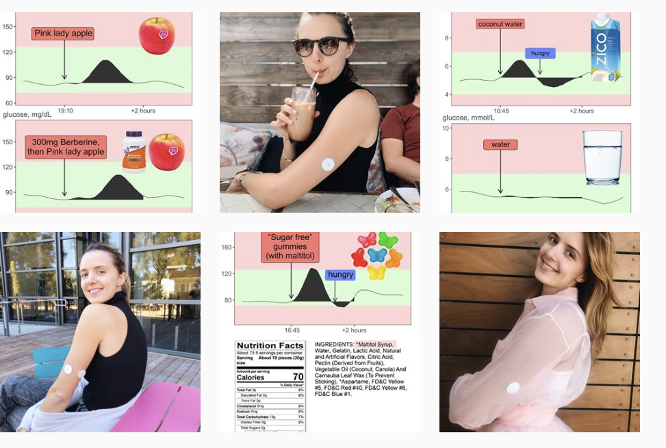

Chapter 5 Scientific articles
- Journal of Diabetes Science and Technology (2020) concludes that Freestyle Libre 2 performs within 20% of blood values.
- Lancet article (2016) that established the accuracy of the underlying CGM technology
- Glucotypes (2018): Stanford study claims people respond differently to foods
- See news article summary
- Upload your data to their online app here: https://abreschi.shinyapps.io/shinySpecClust/
- Personalized Nutrition by Prediction of Glycemic Responses (Cell: Zeevi et al 2015)
- Highly-cited study showing differences are driven by the microbiome
- “Continuous Gluose Profiles in Healthy Subjects” (2007) study.
- FDA approval document: more details about Freestyle Libre and its authorized uses
- (see similar approval for Dexcom, a de novo iCGM)
- “Hunting the Deceitful Turkey” 100+ page book about the tech behind non-invasive glucose monitoring
A handy table of CGM clinical trials (via AMJC)
>>>>> gd2md-html alert: inline image link here (to images/image14.png). Store image on your image server and adjust path/filename/extension if necessary.
(Back to top)(Next alert)
>>>>>

alt_text